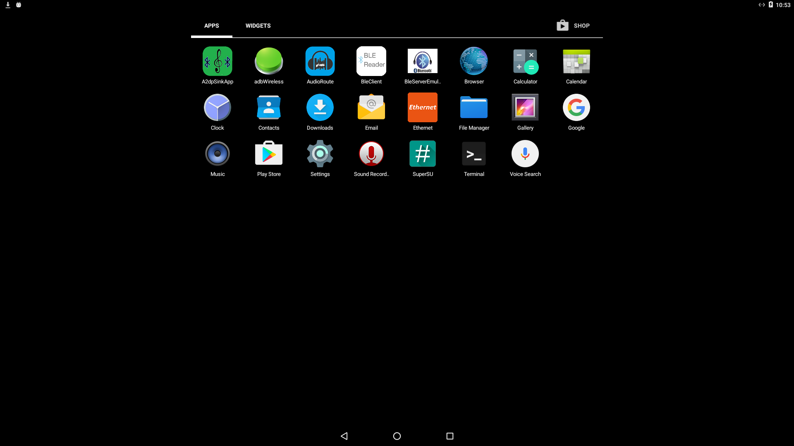

UDOO Quad/Dual Documentation
UDOO Quad/Dual Documentation
How To Install Gapps On UDOO Running Android
Overview
UDOO DUAL/QUAD board ships with a custom build of vanilla Android operating system, the original Android Open Source Project (AOSP). Like you may have noticed when you run Android for the first time, there is no trace of any Google Mobile Services or applications such as Google Play Store, Gmail or others, usually known as Google Apps.
You can easily install Google Apps in the newest Android 6.0.1 Marshmallow for UDOO QUAD/DUAL using the Install from zip function of the TWRP recovery we provide with the image.
First of all you need to download the OpenGApps package. You can download the package directly on the UDOO QUAD/DUAL Android image running the Browser App.
Navigate to OpenGApps and download the right package version choosing:
-
Platform:
ARM -
Android:
6.0 -
Variant: You can choose different variants depending on the apps you want to install. We usually use and test the
nanovariants that contains only Play Services, Play Store and few Apps to not overburdening the system.
Alternatively you can download GApps package on your external PC and copy it in Android using an USB Drive. When you connect an USB Drive you'll find the partition mounted in a folder like: /mnt/media_rw/<Partition_Name>/.
Navigate in this folders with the App CMFileManager (the Root Access option is needed) and copy the package in the Android SD partition, for example in the path: /storage/emulated/0/Download/.
Once you have the .zip file in the Android SD card partition you can reboot the board in Recovery Mode to run the TWRP recovery.
You can find info about how to reboot the board in Recovery Mode reading the Reboot in TWRP recovery section of the UDOO Android Settings page.
Once the TWRP recovery is loaded, enter in the Install menu. Navigate the folder list on the left to find the open_gapps zip package downloaded and click on it.
You need to Swipe to confirm Flash. The procedure that install the GApps will start and will take few minutes. Once the procedure end successful you can press the Reboot System.
Heads up! The first time you reboot the system after GApps installation a Setup Wizard will start. The wizard will fail but this is an expected behavior(this Google wizard is thought to be executed after a fresh Android installation). Just ignore the message by clicking ok.
At this point the Google Apps are installed in you system. You can check it navigate the App Menu. Enjoy.
Heads up! The first time you reboot the system after GApps installation, and after you set a Google Account, the system could appear slowed because the Google Services and Apps are updating itselfs.
Install ADB tools
To install GAPPS in your UDOO DUAL/QUAD board, you must first download a set of tools that will grant you the access to the Android filesystem, and then copy downloaded Google Apps inside your board. This guide requires that you know how to connect UDOO board with Android operating system to your computer.
Required tools are available in the Android SDK used by Android developers to create their mobile applications. Anyhow, we will use these tools only to install Google Apps in your board and no competence in application development is required to follow this guide. The SDK could be downloaded in your system in two different ways:
- Using Android Studio, which is a complete IDE for application development;
- Using only the Android SDK to install required tools.
Whatever is your choice, here you can find the page where you can download both solutions. If you aren’t an Android developer and you don’t want to delve in application development, you can directly download only the Android SDK. When the download finishes you can proceed installing the Android SDK but bear in mind that, during the installation, you should make a note of the name and location where you save the SDK on your system; you will need to refer to the SDK directory later when using the SDK tools from the command line.
After the installation, follow the suggestions you will find in the Adding SDK Packages section available in the link above, in which you will use the SDK Manager to download required tools. Again, if you’re not interested in application development, you can simply download the following items:
- Android SDK Tools
- Android SDK Platform-tools
- Android SDK Build-tools (highest version)
Now that all tools are ready, we should proceed downloading the Google Apps from the https://www.androidfilehost.com/?fid=23311191640114013 website, which store almost all released versions of Google Apps.
According to the UDOO DUAL/QUAD image, based on Android KitKat 4.4.2, you should download and extract in your computer, the following image: gapps-kk-20140105-signed.zip.
The next step, is to copy extracted content into Android /system folder which is, unfortunately, read-only when Android is up and running. However, we can connect the UDOO DUAL/QUAD board to our computer using the Android Debug Bridge (ADB) command line tool, we’ve installed before.
Through it, we can remount the partition with write permissions and use a command to copy extracted content.
We have to locate the adb executable and use it through the command line available for our operating system.
Note: In the following commands we indicate [SDK_location_on_your_system] as the location where you stored the SDK on your system, during the first step.
Windows 7/8/8.1/10
To open the command line, point the mouse to the upper-right corner of the screen, move the mouse pointer down, and then click Search. From the search box, write cmd and click Command Prompt.
Before we can proceed, we need to change the current folder and list the directory content with the following commands:
cd [SDK_location_on_your_system]\sdk\platform-tools
dir
We're in the correct folder if, in the above list, we can find the adb.exe executable.
Linux && MacOSX
Open a Terminal and run the following commands to change the current directory:
cd [SDK_location_on_your_system]/sdk/platform-tools
ls
We're in the correct folder if, in the above list, we can find the adb executable.
Install GAPPS using adb commands
Now that we can launch adb from the command line, we should mount the /system folder with write permissions and then access to the Android shell.
To achieve this step, launch the following command that forces to mount all partitions using default settings, which includes write permissions:
./adb remount
Note: if you are using Windows operating system, you should launch commands with adb.exe instead of ./adb
Now we can easily copy all content from our computer to Android using the command below:
./adb push [your_download_folder]/gapps-kk-20140105-signed/system/. /system/
Note: [your_download_folder] is the location where you’ve downloaded and extracted the gapps-kk-20140105-signed.zip file
When the process is finished, we can reboot the Android system using the reboot button.
The process ends with a success if we found, in the Android launcher, new applications such as Google Play Store and Gmail.